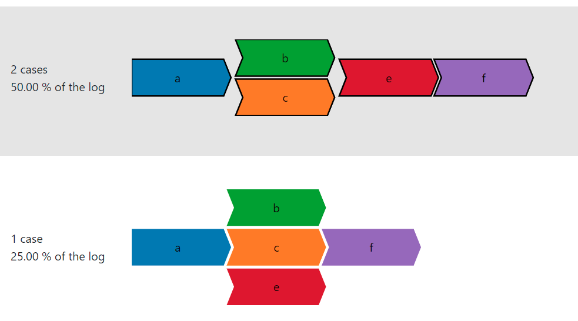

What are Combinations?
The combinations displayed in this page are all the possible ordered
combinations that can be generated using the activities present in the selected partial
order group. We do this to eliminate the stacked activities, and hence partial
orders.
For a given partial order group containing a total of 'n' stacked activities,
there are n! number of possible combinations.
Example:

On selecting the first partial order group from the previous tab (as seen in the figure above),
we get the following possible combinations:
The total number of stacked activities in the selected partial order group is 2, and hence we
get 2! = 2 combinations.
The statistics on the left gives information about the existence of that particular
combination in the event log. Information like number and percentage of traces having the same
combination are displayed. A combination is nothing but a variant. Since, every possible
combination is generated here, there can be combinations/variants (hence also traces) which
may not be present in the event log. In such cases the the number and percentage of traces are
simply 0, which is true in this case. There does not exist a complete ordered trace < a, b,
c, e, f > in the event log.
Further Steps:
Each combination is selectable (grey color appears when hovered on the combination; can be
seen in the figure). Selecting a combination will automatically redirect the application to the
Add Delays tab, where delays can be added to the activities, so that the activities can
be ordered along with the modified timestamps attached to them.